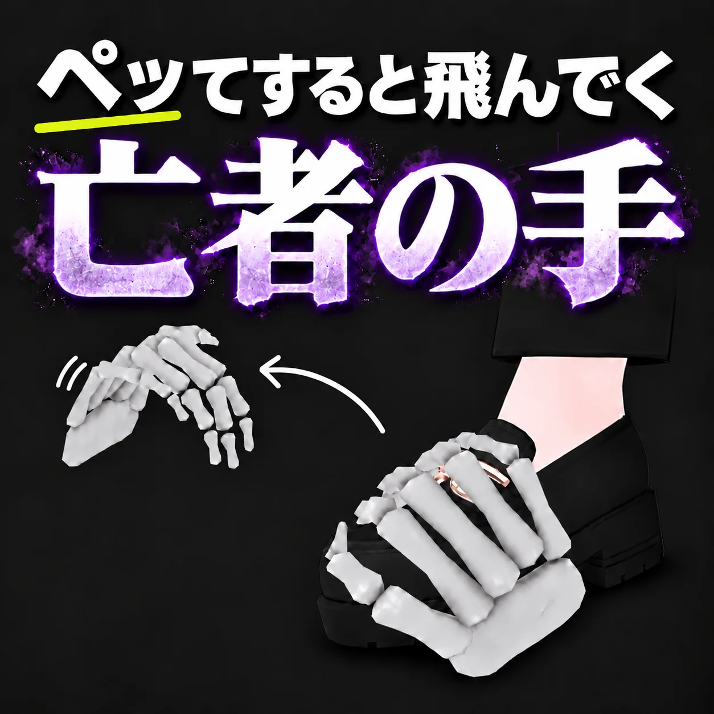

Flick it off
The bone is knocked off based on how hard you move. Walking and normal arm movement rarely knock it off. Kicking, swinging hard, or quick jerky motions will. While you are moving fast, the knock-off check is paused.
The Skeleton Hand That Flies Off When You Flick It
A bone accessory you attach to an arm or a leg. Flick it and the bone flies off and stays on the floor. Touch it again with the body part it was attached to, and it snaps back on.

Attach it to an arm or a leg and it works just by moving. You can choose which body part it attaches to.
The bone is knocked off based on how hard you move. Walking and normal arm movement rarely knock it off. Kicking, swinging hard, or quick jerky motions will. While you are moving fast, the knock-off check is paused.
The bone takes the direction and speed of your flick, flies in an arc, bounces on the floor, and comes to rest.
A bone that lands stays where it fell. It does not follow you when you walk away. If you drop it while jumping, it falls down to the floor below.
Touch the fallen bone with the body part it was attached to (a foot for a foot, the wrist for an arm), and it snaps back on. It only works one second after it fell, and only after that body part has moved away and then touches it again. It never snaps straight back.
Falling, returning, and the on/off state are synced to other players. The way it flies and where it lands are not synced. Each person's game calculates them separately, so the flight and landing spot can look different to each person.
A "Regret" toggle is added to the VRChat menu. Turning it off makes the hand disappear. Turning it on brings it back on the body part it was attached to. The on/off state is saved.
Attach it to any Humanoid bone: feet, toes, shins, thighs, hips, chest, neck, head, shoulders, arms, wrists, or fingers. You can also attach it to any object inside your avatar using "Specify by Object". The default is the left toe. Choosing a right-side part automatically mirrors the model.
You can put one on each foot, or one on a foot and one on an arm. Flicking one does not knock off the other. Each one has its own menu toggle, named after its attachment point (for example, "Regret (Left Toe)").
You can put any object in place of the skeleton hand. The collision (the size that hits the floor) and the pick-up area are adjusted automatically to match the look when you upload.
You can adjust each finger of the skeleton hand, from thumb to little finger, to curl or open. The fingertips are fitted to follow the shape of the body part it is attached to.
The skeleton hand model was made from scratch for this product (1,130 polygons, with a normal map).
Install the prerequisites, place the prefab, and upload as is.
Drag and drop the prefab "Regret" directly under the avatar's root (the topmost level of the avatar).
The attachment point is adjusted automatically at upload to match the body part you chose. Moving the position or rotation does not change where it attaches, so you can move them freely.
Changing the scale sets the hand's size (for example, 1.5 makes it 1.5 times larger). The collision and pick-up area scale by the same factor. The attachment point, flick sensitivity, and flight speed and height do not change. Keep X, Y, and Z the same; if they differ, the average is used and treated uniformly.
Select "Regret" in the Hierarchy and press "Reflect the attach position now (preview)" in the Inspector. You can see it attached to the body part you chose in the Scene view.
Upload as is.
Swing an arm or leg hard, or kick. The attached bone is knocked off, flies away, and stays on the floor.
Touch the fallen hand with the body part it was attached to, and it snaps back on.
Turn "Regret" off in the menu and the hand disappears. Turn it on again and it appears attached to the body part it was on before.
It does not return on respawn or teleport within the same world. A fallen hand stays where it is. If a hand has gone far away, turn it off and on from the menu to bring it back to its body part.
Values you can change inside the prefab. Adjust them through the Inspector settings. The position and rotation of the root ("Regret") do not affect where it attaches, and its scale sets the hand's size.
Select "Regret" in the Hierarchy to see its settings in the Inspector.
| Item | Options | Description |
|---|---|---|
| Attachment point | Any Humanoid bone (default: left toe) / "Specify by Object" for an object inside the avatar | The body part the bone attaches to. At upload, it is attached to this part. Renaming or deleting the object you specified causes an upload error. |
| Mirror on right side | On / Off | Mirrors the model left-right when you choose a right-side part (a bone whose name starts with "Right", and objects beneath it). Turn it off if you do not want mirroring, for example with a symmetrical object. |
| Auto-fit collision | On / Off | Automatically sets the floor-hitting size and the pick-up area to match the look. To set them yourself, turn this off and adjust the BoxCollider and GrabReceiver by hand. |
Some avatars do not have the chosen bone assigned to Humanoid (for example, no toe bone, Toes). In that case, upload shows an error, so choose a different part.
Do not place it inside hair, a skirt, or other parts that sway with PhysBone. It can change how they move or make the hand fall off on its own. The Inspector and upload show a warning for this.
Sliders for the thumb, index, middle, ring, and little fingers. Move toward + to curl and toward − to open (−100 to +100). 0 is the default shape.
Move the fingertips so they follow the body part while you look at it in the Scene view. Curling too far can make the fingers look shrunken. If you swap in a different object and turn off "BoneHand", the sliders do not appear.
If the object you placed has colliders or rigidbodies, they are removed automatically at upload so they do not get in the way of the hand's movement. If you place a mesh that moves with the avatar's bones, such as clothing or hair, it is converted to a fixed mesh in the shape it has at that moment.
Place another "Regret" prefab directly under the avatar's root, and choose a different attachment point for each. Each one also gets its own menu toggle, named after its attachment point (for example, "Regret (Left Toe)").
The avatar's load and the number of sync parameters used both increase with the number of instances.
Please check these before you install.
It does not support Quest (Android).
Whether the hand stops on the floor depends on how the world's floor is built. Where there is no floor collision, or on some special floors, the hand passes through and keeps falling. If a hand can no longer be picked up, turn "Regret" off and then on from the menu to return it to its body part.
In some worlds, it may also pass through walls such as desks and small objects.
Falling, returning, and the on/off state are synced.
The speed, direction, and landing spot of the flight are not synced. The way it flies and where it lands can differ from person to person. On other people's screens, it is calculated separately from the movement of the body part when the sync arrives, so it may drop at their feet or land in a slightly different spot. The pick-up check is done using the hand's position on the owner's screen.
The only parts tested in VRChat itself are the left toe and the right wrist. The right foot, other body parts, multiple placements, and height changes, as well as synchronization between two people's screens and joining mid-session, have been checked only in the Unity Editor. They cannot be guaranteed in VRChat.
If you keep flicking, the fallen hand can be picked up again by the same body part, fall one second later, and repeat.
If the frame rate is low (below about 50 fps) and you kick, the hand may fly faster and higher than the attachment point.
If your avatar or another avatar has colliders, a fallen hand may land on top of them. For your own avatar's colliders, add "Walkthrough" to "Exclude Layers" under "Layer Overrides" on that Collider to avoid this.
A fallen hand keeps the size it had when it fell. Even if you change your avatar's height after it has fallen, the hand's size does not change. It returns to the size that fits your avatar the next time it attaches.
Each instance uses Rigidbody 4, Collider 1, Contact 2, and Constraint 5. This gimmick alone sets the Rigidbody item to Medium. The final rank depends on the whole avatar. Each additional instance adds to it.
The avatars and outfits used in the product introduction are not included.